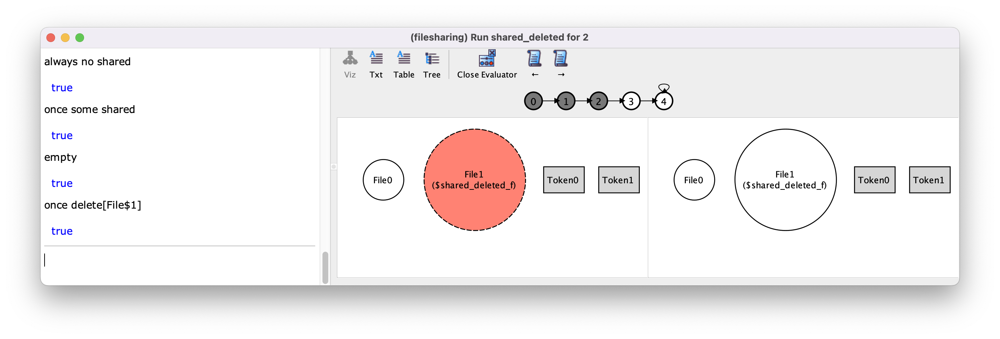

The trace evaluator#
In the previous chapter, we’ve seen how the evaluator can be used to evaluate formulas and expressions over instances. As we’ve moved to behavioural models, the evaluator can still be used similarly, but with some nuances that are worth taking note.
Evaluating expressions#
As in the static version of the visualizer, the evaluator is still opened by pressing the Evaluator button in the toolbar of the instance visualiser window, and closed with the Close Evaluator button in the toolbar.
The main aspect to take into consideration in the trace version of the
evaluator, is that every formula or expression is evaluated from the state
currently focused on the visualizer (the one on the left-hand side). This
applies also to temporal formulas: if you evaluate an always formula,
it will only check whether a property holds from the focused state onwards. This
is different from the formulas written in the model itself, which are always
evaluated from the first state. When you first open the visualizer, the focused
state will be the first one, but as you navigate the trace using the
→ or ← buttons in the toolbar, the focused state may be
one further down the trace.
Let us get back to the file sharing example from the main chapter Behavioral modeling, and, to get some interesting traces, let us define a command that generates traces where the a file is shared and then deleted.
run shared_deleted {
some f:File | eventually (f in shared.Token and after f in trashed)
} for 2
Let us execute the command and then open the evaluator by pressing
Evaluator. Notice that the visualizer still shows two states
side-by-side, and the trace overview is still shown on top of it. Moreover, the
trace navigation buttons → or ← are still available with
the evaluator open. Again, recall that the evaluator will act on the state
focused on the left-hand side of the visualizer. So if you ask for
uploaded, the evaluator will reply with the empty set. You also
evaluate temporal expressions. Sou you can ask for the value of
uploaded'. This will evaluate relation uploaded in the state
next to the first, which has a single file inside. Temporal expressions are
valid even if they go beyond the 2 shown states. For instance, we can see that
uploaded becomes empty at the fifth state.
{kind=link}
Now, let us use button → to further explore the trace, and focus on
the fourth state. If you now evaluate trashed, you’ll get a set with a
single file. This is expected since any temporal expression is now evaluated
from this state onward, and there is indeed a file in the trash in the fourth
state.
{kind=link}
Evaluating formulas#
Besides expressions, the evaluator also supports any temporal formula, including those with past and future operators. The same rule applies to formulas: they are evaluated from the focused state. For instance, getting back to the example, you can ask if, from that point onwards, there is no shared file, which is true. But you can also ask if at any point in the past there was a shared files, which is also true.
You can also call any function and predicate defined in the model. This has a interesting usage in behavioural modelling, since we’ve already seen in the main chapter Behavioral modeling that transitions are often defined by enforcing action predicates at each state. A consequence of this is that there is nothing in the visualizer that identifies which event occurred. The evaluator can be used to quickly check which event occurred in a state transition. Since you can refer to concrete atoms in the evaluator, you can also test whether an event has occurred with a particular atom as a parameter. Below we show some of these formulas evaluated over the fourth state of the trace being visualized.
{kind=link}